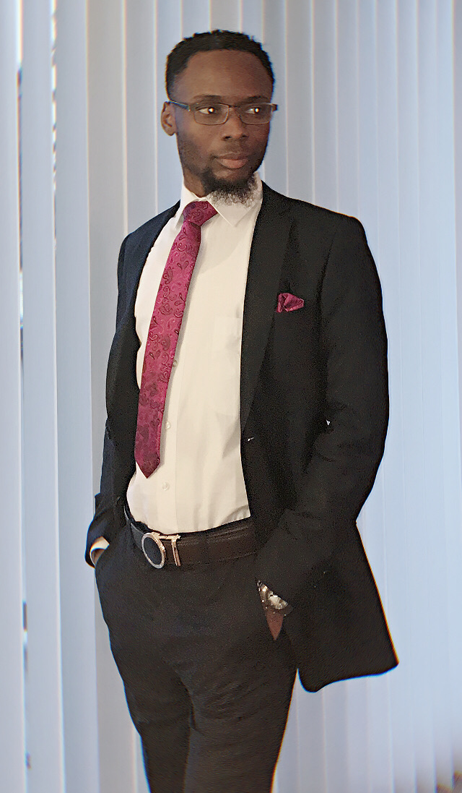

About Me
Hi, My name is Chelvy Moe-Mackosso. I am a Business System Analyst and Quality Assurance Engineer from Delaware who loves to create beautifully organized applications. When not up designing or testing, I like enjoying my time with friends and family and participating in outdoors activities like bungee jumping, sky diving, karting, zip lining, water diving, escape room, etc...
I love creating products that are usefull, easy to navigate with a friendly user interface.
At Business level: I understand, gather requirements and create business process using textual modelling and process flow diagrams using visual modelling.
At Software level: I create use cases/ wireframes using functional requirements modelling.
At Information level: I create entity relationship diagrams (ERD) using data modelling techniques.